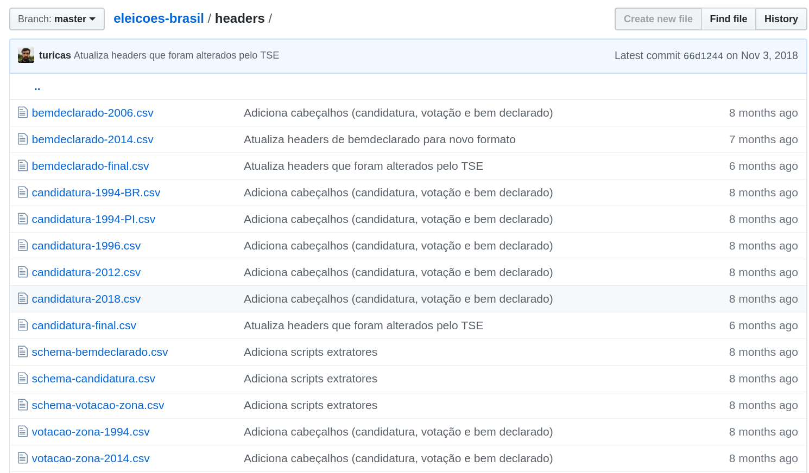

O problema da qualidade dos dados públicos - como resolver?
Álvaro Justen aka Turicas
HackFest Rio
11 de outubro de 2019
$ whoami
Turicas, prazer! =)
Sigam-me os bons:
{twitter,
github,
youtube,
slideshare,
instagram}
/turicas
turicas@brasil.io
Dados Abertos
“ Dados abertos são dados que podem ser livremente usados, reutilizados e redistribuídos por qualquer pessoa - sujeitos, no máximo, à exigência de atribuição da fonte e compartilhamento pelas mesmas regras. ”-- OpenData Handbook (definição de Open Definition)
Mais detalhes:
“ De acordo com o governo brasileiro, o controle social é a participação da sociedade civil nos processos de planejamento, acompanhamento, monitoramento e avaliação das ações da gestão pública e na execução das políticas e programas públicos. ”-- Wikipedia
Operação Serenata de Amor
#civictech

serenata.ai
Rosie, a robô

R$ 191 em um restaurante cujos pratos não custam R$ 40, deputado?
twitter.com/tOa_D/status/1058495655184871425

(em conjunto com Juan Torres, para correio24horas.com.br)
Acesse a matéria

(em conjunto com Giulliana Biaconi, para generonumero.media)
Leia a matéria

(em conjunto com Adriano Belisário, para apublica.org)
Acesse a matéria
Maior parte do tempo dos projetos de análise de dados:

Nem sempre o dado está disponível
Estrelando: Governo de Rondônia

twitter.com/turicas/status/1094069287206248450
Migram-se os ministérios, sem dados
Estrelando: Ministério da Justiça

twitter.com/turicas/status/1112491956314259457
Nem sempre o dado é aberto
Estrelando: Imprensa Oficial do Governo do Rio de Janeiro

twitter.com/turicas/status/1091767340134514690
Formato não estruturado
Estrelando: INEMA/BA

github.com/turicas/balneabilidade-brasil
Colunas mudam de nome
Estrelando: TSE
github.com/turicas/eleicoes-brasil
Nem sempre o dado é grátis (???)
Estrelando: Receita Federal

https://twitter.com/turicas/status/1019272233095745537
Brasil.IO
O Brasil em dados libertos
Software livre
Dúvidas?
“ Restringir acesso a dados públicos é elitizar a democracia. ”-- Manifesto Brasil.IO